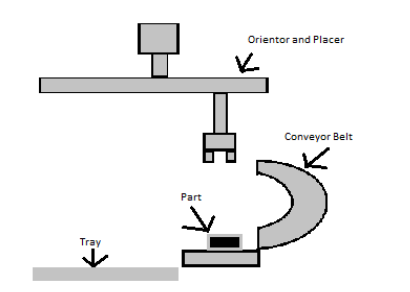

16-778, 18-578, 24-778 Spring 2015
Group G
Eric Newhall (enewhall)
Guillermo Cidre (gmcidre)
Christian Heaney-Secord (cheaneys)
Michael O'Connor (mkoconno)
Systems
- Part Separator Design
- Vision Processing Design
- Part Placer Design
- Tray Positioner Design
- Flux and Wire Dispensor Design
Part Placer Design
This subsystem is responsible for correctly orienting the parts and placing the parts into
the tray. This subsystem only moves in the X direction and picks up the parts by inducing
electromagnetism, but must deal with most of the complexities in this project. One such
complexity is orientating the part itself given the information from the camera.
If the part is not upside down, then the orientator can quickly fix the part by picking it
up and rotating 180 degrees. If the part is upside down, the subsystem will attempt to
flip the part over by grabbing it and inserting it into a horizontal U-shaped conveyor
belt so the part comes right side up. In addition, this system strongly relies on the use
of software accuracy and programming to decide upon which of these actions should it
take. Another complexity it introduces, as shown before, is the tuning of its
electromagnetic strength in order to prevent it from being stuck to the surface or picking
up the tray. This subsystem is an arm attached to a railing that is operated with a servo
for rotation, linear actuator of X position movement, and an electromagnetic material for
placing and picking.

Part Placer Implementation